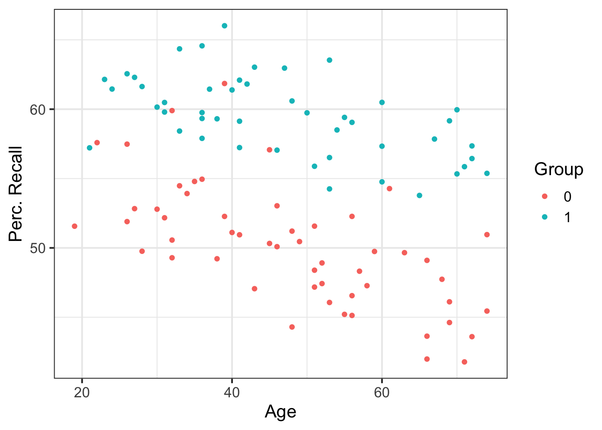
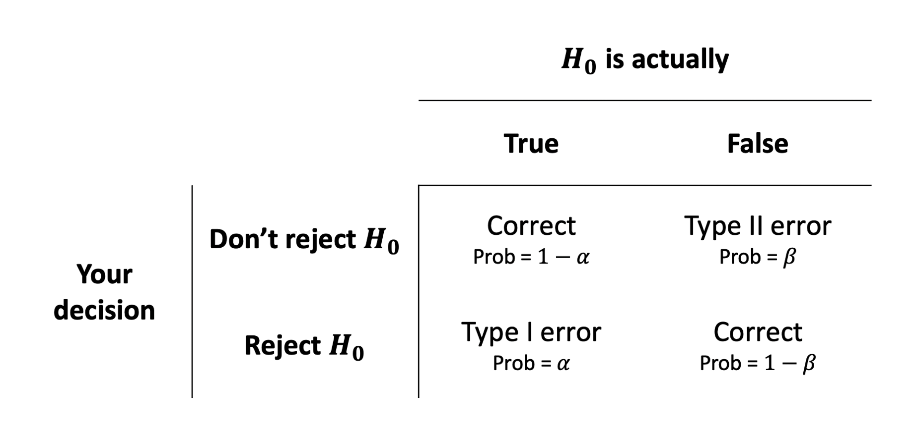

Before describing and analysing data, you clearly need to find some way to have the data. If you are lucky, you will have data provided to you. Other times, you will have to collect the data yourself. If you are collecting data to investigate a specific question you are interested in, you will have to perform a power analysis and sample size determination to make sure you collect enough data to answer your research question. If your sample size is too small, your experiment will lack the precision to provide a reliable answer to your question. Conversely, if the sample size is too large, time and resources will be wasted often to gain negligible benefits.
This week’s topic, statistical power analysis and sample size determination, lets you decide how large a sample should be to enable you to answer your research question with confidence.
Say you are interested in whether the impact of age on recall scores varies between individuals taking a 1-hour long meditation or roller-coaster session.
Let
This corresponds to testing whether in this model
\[ Y_i = \beta_0 + \beta_1 \ X_i + \beta_2 \ D^M_i + \beta_3 \ (X_i \cdot D^M_i) + \epsilon_i \]
the interaction coefficient is 0 or not:
\[ H_0 : \beta_3 = 0 \\ H_1 : \beta_3 \neq 0 \]
A sample of 200 individuals aged 18-75 years old was randomly allocated to either take a free-recall test after a 1-hour long roller-coaster session (group = 0) or a meditation session (group = 1). The data available from at TODO show
perc_recall: the percentage of correctly recalled itemsgroup: whether the individual was assigned to the roller-coaster (group = 0) or the meditation (group = 1) sessionage: the individual’s age## perc_recall group age
## 1 47.42891 0 52
## 2 61.44327 1 37
## 3 50.08974 0 46
## 4 56.44092 1 72
## 5 57.04786 1 46
## 6 46.11492 0 69
When testing an hypothesis, we reach one of the following two decisions:
However, irrespectively of our decision, the underlying truth can either be that
Hence, we have four possible outcomes following an hypothesis test:
The following table summarises the two types of errors that we can commit:

Each error has a corresponding probability:
POWER
Power is the probability of correctly rejecting a false null hypothesis. That is, it is the probability that we will find an effect when it is in fact present.
\[\text{Power} = 1 - \beta = 1 - P(\text{Type II error})\]
Whenever you reach to the decision that you do not reject a null hypothesis you will never know whether (a) the effect does not exist in reality or (b) your test does not have sufficient power. However, you can control the power of your test, to reduce the chance of wasting time and resources.
We will perform power analysis using the pwr package. To install it, run install.packages("pwr").
The following functions are available.
| Function | Description |
|---|---|
pwr.2p.test |
Two proportions (equal n) |
pwr.2p2n.test |
Two proportions (unequal n) |
pwr.anova.test |
Balanced one-way ANOVA |
pwr.chisq.test |
Chi-square test |
pwr.f2.test |
General linear model |
pwr.p.test |
Proportion (one sample) |
pwr.r.test |
Correlation |
pwr.t.test |
t-tests (one sample, two samples, paired) |
pwr.t2n.test |
t-test (two samples with unequal n) |
For each function, you can specify three of four arguments (sample size, alpha, effect size, power) and the fourth argument will be calculated for you.
Of the four quantities, effect size is often the most difficult to specify. Calculating effect size typically requires some experience with the measures involved and knowledge of past research. But what can you do if you have no clue what effect size to expect in a given study?
There are three factors affecting power: the significance level, the sample size, and the effect size. Let’s remind ourselves the meaning of each.
Significance level: the threshold \(\alpha\) used to determine whether reject \(H_0\) if the p-value \(\leq \alpha\).
Sample size: the number of observations in each condition/group of the experimental design.
Effect size: the magnitude of the effect under the alternate or research hypothesis.
In general, power increases with larger sample size, larger effect size, and larger alpha level.
However, the effect size is typically not under direct control of the researcher. This means that we can only increase power by either taking a larger sample size, or making \(\alpha\) larger (the latter however is not good practice). The researchers typically want to maximise power of their test while keeping under control the probability of a type I error \(\alpha\) and employing a feasible sample size.